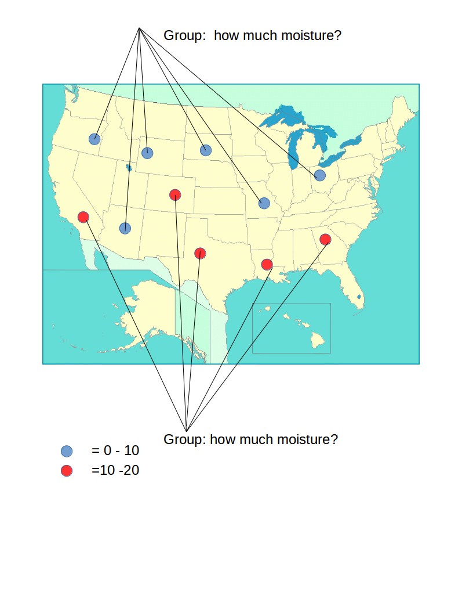
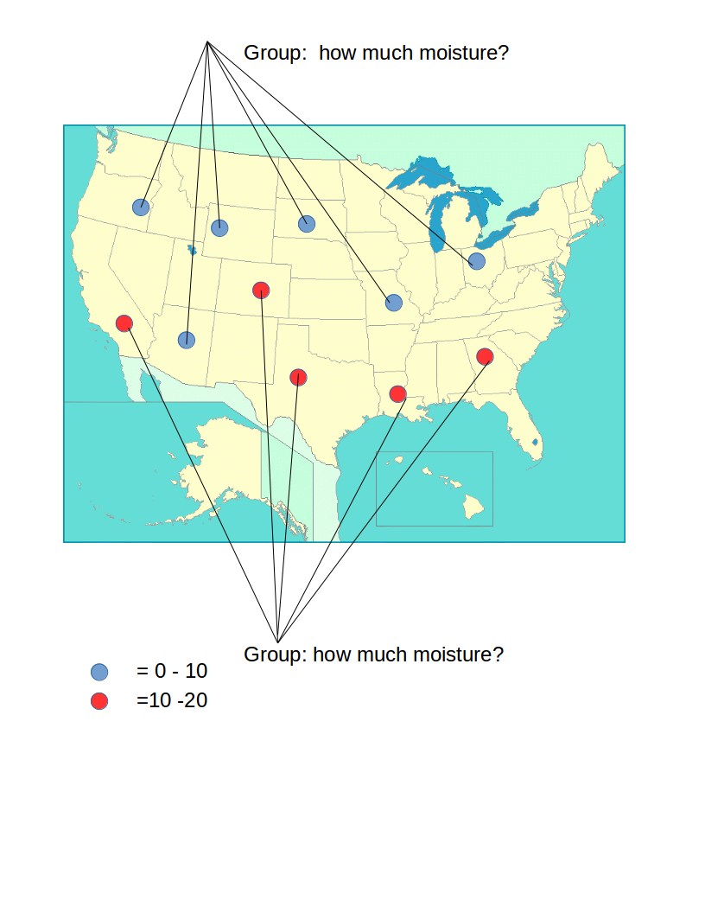

Illustration¶
(Of course, there will be many more stations and more groups in the real example!)
<< Lesson 5 Map Reduce with Multiple Steps | Illustration (2) >>
(Of course, there will be many more stations and more groups in the real example!)
<< Lesson 5 Map Reduce with Multiple Steps | Illustration (2) >>